The tool calculates production levels and storage market opportunities for average, rainfed, and irrigated crops at any point in Africa.
Production Tools
Step 1
Select a crop from the Step 1 drop-down menu. The raster should be displayed on the map. Consult the legend for more information on this visualization.
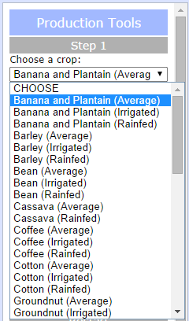Step 2
Click either the "Choose Point" or the "Draw Polygon" buttons.
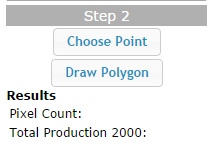The "Choose Point" button will open a dialog box. Enter a distance and choose either Miles or Kilometers, then click "Choose Point". Now, click on the map. A buffer of the specified distance will be drawn around your point.
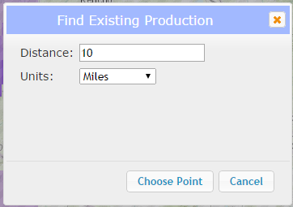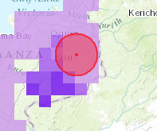
The "Draw Polygon" button will start the draw polygon process. Click on the map to start drawing and double-click to auto-complete the polygon.
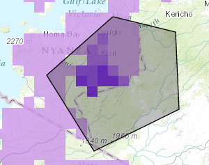Once you have selected your area of interest (either by clicking a point or completing a polygon), the application will calculate the number of pixels that fall within your area and the total production. All pixels with a centroid within your area of interest will be included in these results. Results will be shown in the left panel, under the "Choose Point" and "Draw Polygon" buttons.
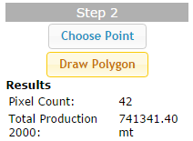Step 3
Either enter a percentage value for future production increase in the "Production Increase" text box or drag the slider until the text box shows the correct production increase. Click "Find Future Production".
The application will calculate future production values and display the results in the left panel, under the "Find Future Production" button.
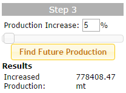Step 4
Enter the count and capacity of big and small silos in your area of interest, along with the current storage utilization. Click "Calculate Current Storage" and the application will use these values to calculate the current storage capacity and utilization of your area of interest. Results will be shown in the left panel, beneath the "Calculate Current Storage" button.
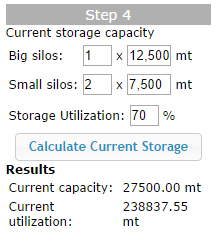Step 5
Enter your estimated storage utilization increase and click "Calculate Market Opportunity" and the application will use this value along with the values found in steps 3 and 4 to calculate the future storage utilization and market opportunity. Results will be shown in the left panel beneath the "Calculate Market Opportunity" button, as well as a popup shown on the map.
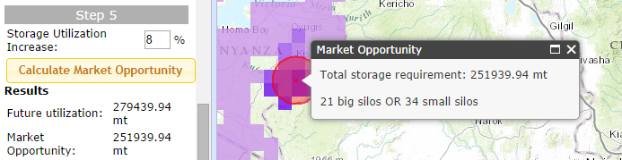Restart
To choose another crop, area of interest, or other estimation values, click "Clear" and the application should return to its original state.
Legend
The legend displays information on the crop layer that was chosen in Step 1 of the Production Tools workflow.
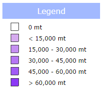Data Source
To view data citations, click the "Toggle Citation" button.
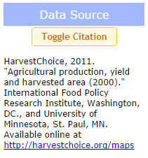